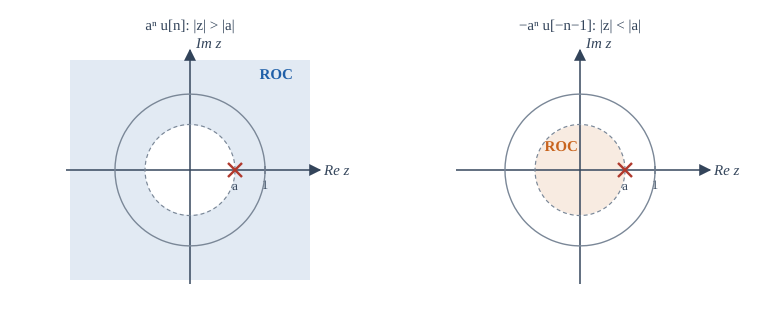
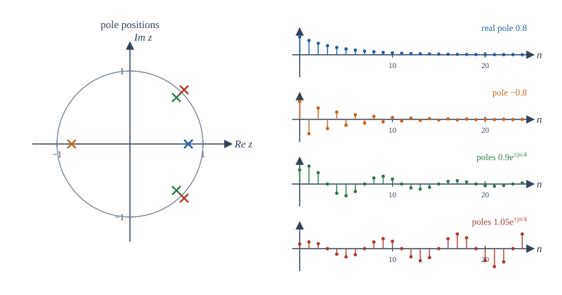

Chapter 11: The z-Transform¶
The discrete-time partner of the Laplace transform: system functions, poles inside the unit circle, and difference equations
Learning outcomes
After this chapter you should be able to:
- define the z-transform, relate it to the DTFT and to the Laplace transform, and find its region of convergence;
- use a table of pairs and the properties of the transform;
- invert rational z-transforms by partial fractions and by long division;
- find the system function of a difference equation and decide causality and stability from its poles;
- solve difference equations with initial conditions using the unilateral transform;
- estimate a frequency response by looking at the positions of poles and zeros.
11.1 Definition¶
The z-transform of a sequence \(x[n]\) is
where \(z\) is a complex variable. It plays for discrete-time signals the role that the Laplace transform plays for continuous-time ones. Writing \(z\) in polar form, \(z = re^{j\Omega}\),
The z-transform is the DTFT of \(x[n]\) weighted by the real exponential \(r^{-n}\). Choosing \(r\) suitably makes the sum converge for sequences that have no DTFT. On the unit circle \(|z| = 1\) the weighting disappears and the z-transform is the DTFT:
In the z-plane, the angle of \(z\) is the frequency \(\Omega\), and the radius \(r\) is the growth or decay factor per sample. The unit circle plays the part of the \(j\omega\) axis of the s-plane. The link is exact for sampled signals: sampling \(e^{st}\) every \(T\) seconds gives \((e^{sT})^n\), so
This mapping sends the \(j\omega\) axis onto the unit circle (going round once for every \(\omega_s\) of frequency), the left half of the s-plane into the inside of the unit circle, and the right half-plane outside it.
A practical reading of the definition: \(X(z)\) is a power series in \(z^{-1}\) whose coefficients are the samples. For a finite sequence it is just a polynomial. The sequence \(x[0] = 2\), \(x[1] = -1\), \(x[2] = 3\) has \(X(z) = 2 - z^{-1} + 3z^{-2}\). The factor \(z^{-1}\) marks a delay of one sample, which is why block diagrams label the delay element \(z^{-1}\).
11.2 The region of convergence¶
Example 11.1 A right-sided exponential
For \(x[n] = a^n u[n]\):
provided \(|az^{-1}| < 1\), that is \(|z| > |a|\). The ROC is the outside of the circle of radius \(|a|\). There is a pole at \(z = a\) and a zero at \(z = 0\).
Example 11.2 A left-sided exponential
For \(x[n] = -a^n u[-n-1]\) (non-zero for \(n \le -1\)):
provided \(|a^{-1}z| < 1\), that is \(|z| < |a|\). The ROC is the inside of the circle.
As with the Laplace transform, two different sequences share one formula, and the ROC tells them apart (Figure 11.1).

Because convergence depends only on \(|z|\), the ROC is made of rings centred on the origin. Its properties mirror those of Section 10.2:
- The ROC is an annulus \(r_1 < |z| < r_2\) (which may be a disc, the outside of a circle, or the whole plane, possibly excluding \(z = 0\) or \(z = \infty\)).
- For rational \(X(z)\) the ROC contains no poles and is bounded by poles.
- A finite-duration sequence has an ROC of the whole plane, except possibly \(z = 0\) (if it has samples at \(n > 0\)) and \(z = \infty\) (if it has samples at \(n < 0\)).
- A right-sided sequence has an ROC outside its outermost pole.
- A left-sided sequence has an ROC inside its innermost pole.
- A two-sided sequence has an annular ROC between two poles, or none.
- The DTFT exists if and only if the ROC includes the unit circle.
11.3 Pairs and properties¶
| \(x[n]\) | \(X(z)\) | ROC |
|---|---|---|
| \(\delta[n]\) | \(1\) | all \(z\) |
| \(\delta[n - m]\), \(m > 0\) | \(z^{-m}\) | \(z \ne 0\) |
| \(u[n]\) | \(\dfrac{1}{1 - z^{-1}}\) | \(\lvert z\rvert > 1\) |
| \(a^nu[n]\) | \(\dfrac{1}{1 - az^{-1}}\) | \(\lvert z\rvert > \lvert a\rvert\) |
| \(-a^nu[-n-1]\) | \(\dfrac{1}{1 - az^{-1}}\) | \(\lvert z\rvert < \lvert a\rvert\) |
| \(na^nu[n]\) | \(\dfrac{az^{-1}}{(1 - az^{-1})^2}\) | \(\lvert z\rvert > \lvert a\rvert\) |
| \((n + 1)a^nu[n]\) | \(\dfrac{1}{(1 - az^{-1})^2}\) | \(\lvert z\rvert > \lvert a\rvert\) |
| \(r^n\cos(\Omega_0n)\,u[n]\) | \(\dfrac{1 - r\cos\Omega_0\,z^{-1}}{1 - 2r\cos\Omega_0\,z^{-1} + r^2z^{-2}}\) | \(\lvert z\rvert > r\) |
| \(r^n\sin(\Omega_0n)\,u[n]\) | \(\dfrac{r\sin\Omega_0\,z^{-1}}{1 - 2r\cos\Omega_0\,z^{-1} + r^2z^{-2}}\) | \(\lvert z\rvert > r\) |
Table 11.1. z-transform pairs.
| Property | Sequence | Transform | ROC |
|---|---|---|---|
| Linearity | \(ax_1[n] + bx_2[n]\) | \(aX_1(z) + bX_2(z)\) | at least \(R_1 \cap R_2\) |
| Time shift | \(x[n - n_0]\) | \(z^{-n_0}X(z)\) | \(R\), except possibly \(0\) or \(\infty\) |
| Scaling in \(z\) | \(a^nx[n]\) | \(X(z/a)\) | \(\lvert a\rvert R\) |
| Time reversal | \(x[-n]\) | \(X(1/z)\) | \(1/R\) |
| Differentiation in \(z\) | \(n\,x[n]\) | \(-z\,\dfrac{dX(z)}{dz}\) | \(R\) |
| Convolution | \(x_1[n] * x_2[n]\) | \(X_1(z)X_2(z)\) | at least \(R_1 \cap R_2\) |
| Accumulation | \(\sum_{k=-\infty}^{n}x[k]\) | \(\dfrac{X(z)}{1 - z^{-1}}\) | at least \(R \cap \{\lvert z\rvert > 1\}\) |
| Initial value (\(x\) causal) | \(x[0]\) | \(\lim_{z\to\infty}X(z)\) | |
| Final value (\(x\) causal) | \(\lim_{n\to\infty}x[n]\) | \(\lim_{z\to1}(1 - z^{-1})X(z)\) | if the limit exists |
Table 11.2. Properties of the z-transform.
The final value theorem, like its Laplace counterpart, applies only when \((1 - z^{-1})X(z)\) has all its poles strictly inside the unit circle.
11.4 The inverse z-transform¶
Partial fractions¶
For a rational \(X(z)\) it is convenient to work in powers of \(z^{-1}\), because the basic pair \(a^nu[n] \leftrightarrow \frac{1}{1 - az^{-1}}\) has that form. Write
If \(M \ge N\), divide first. For distinct poles, \(X(z) = \sum_i \frac{A_i}{1 - p_iz^{-1}}\) with
Each term becomes \(A_ip_i^nu[n]\) if the ROC is outside \(|p_i|\), or \(-A_ip_i^nu[-n-1]\) if it is inside.
Example 11.3 Two real poles
Invert \(X(z) = \dfrac{1}{(1 - 0.5z^{-1})(1 - 0.25z^{-1})}\) with ROC \(|z| > 0.5\).
\(A_1 = \dfrac{1}{1 - 0.25z^{-1}}\Big|_{z = 0.5} = \dfrac{1}{1 - 0.5} = 2\), and \(A_2 = \dfrac{1}{1 - 0.5z^{-1}}\Big|_{z=0.25} = \dfrac{1}{1 - 2} = -1\).
The ROC is outside both poles, so \(x[n] = \left[2(0.5)^n - (0.25)^n\right]u[n]\). This is the convolution \((0.5)^nu[n] * (0.25)^nu[n]\) found the hard way in Exercise 4.3: the product of the two transforms is the transform of their convolution.
With ROC \(0.25 < |z| < 0.5\) instead, the pole at 0.5 is outside the ROC: \(x[n] = -2(0.5)^nu[-n-1] - (0.25)^nu[n]\).
Long division¶
Dividing the numerator by the denominator as power series in \(z^{-1}\) produces the samples one by one (for a right-sided sequence). For \(X(z) = \frac{1}{1 - 0.5z^{-1}}\), division gives \(1 + 0.5z^{-1} + 0.25z^{-2} + 0.125z^{-3} + \cdots\), so \(x[n] = 1, 0.5, 0.25, 0.125, \ldots\) for \(n = 0, 1, 2, 3, \ldots\). Long division gives no closed form, but it is a useful check, and it is exactly what iterating the difference equation does.
11.5 System functions¶
For a DT LTI system, \(Y(z) = H(z)X(z)\), where the system function \(H(z)\) is the z-transform of the impulse response. A linear constant-coefficient difference equation
transforms, by the time-shift property, into
The coefficients of the equation are the coefficients of the polynomials. Evaluating on the unit circle gives the frequency response of Section 7.4.
Causality and stability¶
- A causal system has a right-sided \(h[n]\), so the ROC of \(H(z)\) is the outside of a circle through the outermost pole (and includes \(z = \infty\), which requires the numerator degree in \(z\) not to exceed the denominator degree).
- A stable system has \(\sum|h[n]| < \infty\), which holds if and only if the ROC includes the unit circle.
- Therefore a causal system with rational \(H(z)\) is stable if and only if all its poles lie strictly inside the unit circle.
Each pole \(p\) contributes \(p^nu[n]\) to the impulse response: decaying if \(|p| < 1\), growing if \(|p| > 1\). Its angle sets the frequency of oscillation and its radius the rate of decay (Figure 11.2). Poles near the unit circle give long, slowly decaying responses and sharp peaks in the frequency response.

FIR and IIR systems¶
If all \(a_k = 0\) for \(k \ge 1\), the system is non-recursive: \(H(z) = \sum b_kz^{-k}\) is a polynomial in \(z^{-1}\), all its poles are at \(z = 0\), and the impulse response is \(h[n] = b_n\), of finite length. Such a system is FIR (finite impulse response) and always stable. If any \(a_k \ne 0\), \(H(z)\) has poles away from the origin and the impulse response is in general infinitely long: the system is IIR. Chapter 12 designs both kinds.
Example 11.4 From difference equation to stability
Is the causal system \(y[n] = 1.5\,y[n-1] - 0.56\,y[n-2] + x[n]\) stable?
\(H(z) = \dfrac{1}{1 - 1.5z^{-1} + 0.56z^{-2}} = \dfrac{z^2}{z^2 - 1.5z + 0.56}\). The poles solve \(z^2 - 1.5z + 0.56 = 0\): \(z = \frac{1.5 \pm \sqrt{2.25 - 2.24}}{2} = 0.8\) and \(0.7\). Both are inside the unit circle: stable. Changing \(0.56\) to \(0.5\) gives poles at \(1.0\) and \(0.5\); the pole on the unit circle makes the system unstable (its step response grows without limit).
11.6 The unilateral z-transform¶
To solve difference equations that start at \(n = 0\) with given initial conditions, use the unilateral z-transform \(\mathcal{X}(z) = \sum_{n=0}^{\infty}x[n]z^{-n}\). Its time-shift property brings in the initial values:
Example 11.5 A difference equation with an initial condition
Solve \(y[n] - 0.5\,y[n-1] = u[n]\) for \(n \ge 0\), with \(y[-1] = 4\).
Transform: \(\mathcal{Y} - 0.5\left(z^{-1}\mathcal{Y} + 4\right) = \dfrac{1}{1 - z^{-1}}\), so
The second term splits as \(\frac{2}{1 - z^{-1}} - \frac{1}{1 - 0.5z^{-1}}\). Altogether \(\mathcal{Y} = \frac{2}{1 - z^{-1}} + \frac{1}{1 - 0.5z^{-1}}\), so \(y[n] = 2 + (0.5)^n\) for \(n \ge 0\).
Check by iteration: \(y[0] = 0.5\cdot4 + 1 = 3\) and \(y[1] = 0.5\cdot3 + 1 = 2.5\), matching \(2 + 1\) and \(2 + 0.5\). The final value 2 agrees with the final value theorem.
11.7 Reading the frequency response from the pole-zero plot¶
Factor a rational system function as
On the unit circle, \(z = e^{j\Omega}\), each factor \(e^{j\Omega} - z_i\) is the vector from the zero \(z_i\) to the point \(e^{j\Omega}\). Therefore
and the phase is the sum of the angles of the zero vectors minus the sum of the angles of the pole vectors. As the point \(e^{j\Omega}\) travels round the unit circle from \(\Omega = 0\) to \(\pi\):
- it passes close to a pole near the circle, and the response peaks there;
- it passes over a zero on the circle, and the response is exactly zero there;
- poles and zeros at the origin are equally distant from every point of the circle, so they affect only the phase (a delay), not the magnitude.
This geometric picture is the designer's intuition for digital filters. To pass frequencies near \(\Omega_0\), put poles just inside the circle at angle \(\pm\Omega_0\); to block them, put zeros on the circle at \(\pm\Omega_0\). The same picture works in the s-plane with the \(j\omega\) axis in place of the unit circle.
Example 11.6 A first-order system, geometrically
\(H(z) = \dfrac{1}{1 - 0.8z^{-1}} = \dfrac{z}{z - 0.8}\) has a zero at 0 and a pole at 0.8. At \(\Omega = 0\) the point \(z = 1\) is at distance 0.2 from the pole, so \(|H| = 1/0.2 = 5\). At \(\Omega = \pi\), \(z = -1\) is at distance 1.8, so \(|H| = 1/1.8 = 0.556\). These are the values found algebraically in Example 7.2.
11.8 Impulse responses and initial conditions in NumPy¶
The function run below implements a general difference equation sample by sample, with optional initial conditions. It is a small version of what SciPy's scipy.signal.lfilter does. The program checks the poles and the partial-fraction result of Example 11.3, and the solution of Example 11.5.
import numpy as np
def run(b, a, x, y_init=()):
"""Run a0 y[n] + a1 y[n-1] + ... = b0 x[n] + b1 x[n-1] + ... for n = 0, 1, ...
y_init holds y[-1], y[-2], ...; earlier inputs are taken as zero."""
N, M = len(a) - 1, len(b) - 1
y_past = list(y_init) + [0.0] * (N - len(y_init)) # y[n-1], y[n-2], ...
x_past = [0.0] * M # x[n-1], x[n-2], ...
out = []
for xn in x:
acc = b[0] * xn + sum(b[k] * x_past[k - 1] for k in range(1, M + 1))
acc -= sum(a[k] * y_past[k - 1] for k in range(1, N + 1))
yn = acc / a[0]
out.append(yn)
y_past = [yn] + y_past[:-1] if N else y_past
x_past = [xn] + x_past[:-1] if M else x_past
return np.array(out)
# H(z) = 1 / (1 - 0.75 z^-1 + 0.125 z^-2): poles, impulse response, partial-fraction formula
a = [1, -0.75, 0.125]
print("poles:", np.roots(a), " all inside unit circle:", np.all(np.abs(np.roots(a)) < 1))
n = np.arange(8)
delta = (n == 0).astype(float)
h = run([1], a, delta)
print("recursion :", np.round(h, 5))
print("formula :", np.round(2 * 0.5 ** n - 0.25 ** n, 5))
# Unilateral example: y[n] - 0.5 y[n-1] = u[n] with y[-1] = 4 -> y[n] = 2 + 0.5^n
y = run([1], [1, -0.5], np.ones(6), y_init=[4.0])
print("with initial condition:", y, " formula:", 2 + 0.5 ** np.arange(6))
poles: [0.5 0.25] all inside unit circle: True
recursion : [1. 0.75 0.4375 0.23438 0.12109 0.06152 0.03101 0.01556]
formula : [1. 0.75 0.4375 0.23438 0.12109 0.06152 0.03101 0.01556]
with initial condition: [3. 2.5 2.25 2.125 2.0625 2.03125] formula: [3. 2.5 2.25 2.125 2.0625 2.03125]
Notice that np.roots(a) applied to the coefficients \([1, -0.75, 0.125]\) of the denominator in powers of \(z^{-1}\) gives the poles directly: multiplying \(1 - 0.75z^{-1} + 0.125z^{-2}\) by \(z^2\) gives the polynomial \(z^2 - 0.75z + 0.125\) with the same coefficients.
11.9 Summary¶
Summary
- \(X(z) = \sum x[n]z^{-n}\) is the DTFT of \(x[n]r^{-n}\); on the unit circle it is the DTFT. For sampled signals \(z = e^{sT}\) maps the left half s-plane into the unit disc.
- The ROC is an annulus, outside the outermost pole for right-sided sequences and inside the innermost for left-sided ones; it decides which sequence a formula represents.
- Invert by partial fractions in \(z^{-1}\) (choosing each term by the ROC) or by long division.
- A delay is \(z^{-1}\); convolution is multiplication. A difference equation gives \(H(z)\) as a ratio of polynomials in \(z^{-1}\).
- Causal and stable means all poles strictly inside the unit circle. FIR systems have all poles at the origin and are always stable.
- The unilateral transform brings initial conditions in through the shift property.
- \(|H(e^{j\Omega})|\) is the product of distances to the zeros divided by the product of distances to the poles: poles near the circle make peaks, zeros on it make nulls.
11.10 Exercises¶
Exercise 11.1
Find the z-transform and ROC of \(x[n] = \{3, 0, -2, 1\}\) for \(n = 0, \ldots, 3\).
Answer
\(X(z) = 3 - 2z^{-2} + z^{-3}\), ROC all \(z\) except \(z = 0\).
Exercise 11.2
Find the z-transform of \(x[n] = (0.5)^nu[n] + (-0.8)^nu[n]\) and its ROC.
Answer
\(\dfrac{1}{1 - 0.5z^{-1}} + \dfrac{1}{1 + 0.8z^{-1}}\), ROC \(|z| > 0.8\).
Exercise 11.3
Find the z-transform and ROC of \(x[n] = (0.5)^nu[n] - 2^nu[-n-1]\). Does the DTFT exist?
Answer
\(\dfrac{1}{1 - 0.5z^{-1}} + \dfrac{1}{1 - 2z^{-1}}\) (the second from Example 11.2 with \(a = 2\)), ROC \(0.5 < |z| < 2\). It contains the unit circle, so the DTFT exists.
Exercise 11.4
Invert \(X(z) = \dfrac{1 + z^{-1}}{1 - 0.25z^{-2}}\) for a causal sequence.
Answer
\(1 - 0.25z^{-2} = (1 - 0.5z^{-1})(1 + 0.5z^{-1})\). Residues: at \(0.5\), \(\frac{1 + 2}{1 + 1} = 1.5\); at \(-0.5\), \(\frac{1 - 2}{1 + 1} = -0.5\). So \(x[n] = [1.5(0.5)^n - 0.5(-0.5)^n]u[n]\). Check: \(x[0] = 1\), \(x[1] = 0.75 + 0.25 = 1\).
Exercise 11.5
Find the first four samples of the causal inverse of \(X(z) = \dfrac{1}{1 - z^{-1} + 0.5z^{-2}}\) by long division.
Answer
\(x[n] = x[n-1] - 0.5x[n-2] + \delta[n]\) gives \(1, 1, 0.5, 0\).
Exercise 11.6
Find \(H(z)\), its poles and zeros, and decide stability for the causal system \(y[n] = 0.9y[n-1] + x[n] - x[n-1]\).
Answer
\(H(z) = \dfrac{1 - z^{-1}}{1 - 0.9z^{-1}}\): zero at \(1\), pole at \(0.9\). Stable. It is a high-pass filter that blocks DC (the zero at \(z = 1\), \(\Omega = 0\)).
Exercise 11.7
For which values of \(a\) is the causal system \(y[n] = a\,y[n-1] + x[n]\) stable?
Answer
The pole is at \(z = a\), so the system is stable for \(|a| < 1\).
Exercise 11.8
Use the final value theorem to find the steady-state step response of \(H(z) = \dfrac{0.2}{1 - 0.8z^{-1}}\).
Answer
\(Y(z) = \dfrac{0.2}{(1 - 0.8z^{-1})(1 - z^{-1})}\), and \((1 - z^{-1})Y \to \dfrac{0.2}{0.2} = 1\) as \(z \to 1\). The DC gain is \(H(1) = 1\).
Exercise 11.9
A causal second-order system has poles at \(0.95e^{\pm j\pi/3}\). Near which frequency does its frequency response peak, and what is the period of its oscillating impulse response?
Answer
Near \(\Omega = \pi/3\); the impulse response oscillates with period \(2\pi/(\pi/3) = 6\) samples, decaying by a factor 0.95 per sample.
Exercise 11.10
A CT system has a pole at \(s = -100\). It is sampled with \(T = 1\) ms. Where does the corresponding DT pole lie?
Answer
\(z = e^{sT} = e^{-0.1} \approx 0.905\), inside the unit circle, as a stable CT pole must map.
11.11 Quiz¶
Check your understanding of Chapter 11
Exercise 1
On which contour does the z-transform equal the DTFT?
- the unit circle
- the real axis
- the imaginary axis
- the circle |z| = 2
Answer
the unit circle
Exercise 2
A causal system with rational H(z) is stable if and only if its poles
- are strictly inside the unit circle
- are in the left half-plane
- are on the unit circle
- are real
Answer
are strictly inside the unit circle
Exercise 3
The ROC of a right-sided sequence is
- outside a circle
- inside a circle
- an annulus always
- the unit circle only
Answer
outside a circle
Exercise 4
What is the pole of H(z) = 1/(1 − 0.6 z⁻¹)?
Answer
0.6 / z = 0.6
Exercise 5
In a z-plane pole-zero plot, a zero placed on the unit circle at angle Ω0
- makes the response zero at Ω0
- makes the response peak at Ω0
- only adds delay
- makes the system unstable
Answer
makes the response zero at Ω0
Exercise 6
A delay of one sample corresponds to multiplying the z-transform by ___.
Answer
z^-1 / z⁻¹ / 1/z
Exercise 7
Under the mapping z = e^(sT), the left half of the s-plane maps to
- the inside of the unit circle
- the outside of the unit circle
- the unit circle
- the left half of the z-plane
Answer
the inside of the unit circle